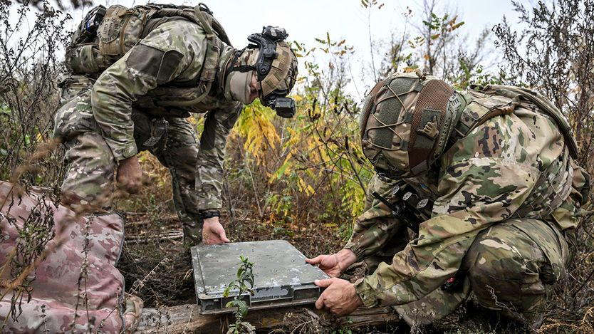

欧洲必须摆脱对美国卫星的依赖
Europe must escape its reliance on American satellites
要摆脱，就得先改掉老习惯

- 马斯克据称下令让「星链」在乌克兰境内部分失能，直接削弱乌军防空与反击能力。一个私人企业家能左右战场走势，这是给欧洲最刺眼的提醒：安全押在别人手里，随时会被收回。
- 欧洲讲「太空自主」讲了多年，却没有可用的替代方案。重型火箭研发拖了工期，2023 至 2024 年有近一年没有自主上天能力，还靠每年约 3 亿欧元补贴养着，发射报价反而比 SpaceX 贵三成。
- 病根在采购机制：欧洲空间局按「谁出钱多」分合同，不按谁效率高。现在它开始学 NASA，把研发合同改成按固定价格购买发射服务，并放行卫星制造商合并。
- 真正的解法是「联邦式」组网：各国按统一标准造卫星、连成更大的星座，谁都不丢控制权，覆盖和抗打击能力却一起上升。芬兰 Iceye 已在这么做，加拿大、日本、韩国也可以拉进来。
最近几天发生的事，把一件事讲透了：把国家安全过多地押在一个喜怒无常的私人公民——埃隆·马斯克身上，是多么愚蠢。据称马斯克下令在乌克兰境内让他的卫星互联网服务部分「失能」。这带来两重恶果：一是削弱了乌克兰本已有限的防空能力，难以保护城市和平民免遭俄罗斯快速而致命的无人机袭击；二是让乌克兰更难反击俄军占领部队。
如果唐纳德·特朗普总统对这份送给克里姆林宫的大礼有所不满，他并没有说出来。欧洲及其他地区的美国盟友有理由问一句：这个超级大国还能被信任到什么程度？将来它们若需要天基通信系统来抵御攻击，能否确定美国会无条件供应？可惜问题在于，本土没有可用的替代品。欧洲嘴上把「太空自主」讲得很好，但那需要时间和金钱，还需要砍掉拖累其太空事业的浪费、内斗和重复建设。
怎么走到那一步？首先，欧洲必须具备把大量卫星送入轨道的发射能力。这方面它的成绩单很难看。阿丽亚娜火箭能把重型载荷送上太空，但成本和效率都远不能与马斯克的公司相比。
欧洲的火箭计划集中体现了其太空项目的毛病。重型运载火箭「阿丽亚娜 6 号」研发拖延，导致欧洲在 2023 至 2024 年间有将近一年没有自主进入太空的能力。出资的欧洲空间局（ESA）要负部分责任：它不把合同给最有创新力或效率最高的供应商，而是照顾出钱最多的国家所推荐的企业。这个计划还被挡在市场力量之外，每年拿到约 3 亿欧元（3.37 亿美元）的公共补贴。难怪它被 SpaceX 打得没脾气：后者去年发射「猎鹰 9 号」165 次，每次向商业客户收费 7000 万美元；阿丽亚娜即便有补贴，报价仍在 9000 万美元以上。
为了纠偏，欧洲空间局正试探性地效仿美国航天局（NASA）。几十年前 NASA 把火箭研发的「成本加成」合同——造多少花多少、成本全报销——改成按固定价格购买发射服务，正是这一转变让马斯克的 SpaceX 成长起来。该局已把合同授予三家火箭初创公司。接下来可能出现并购，例如欧洲三家最大卫星制造商拟议中的合并。但欧洲能否造出一家足以在全球竞争的企业，同时又不削弱本土竞争？
欧洲的第二优先事项，是造出「星链」的对手，而且不能靠推高价格、压制创新的政策来做。由英法政府部分持股的 OneWeb 已在提供部分类似服务。欧盟正在推进 IRIS² 计划，投入 160 亿欧元部署 348 颗卫星，为政府和军队提供安全通信。可即便如此，仍然碎片化、重复建设：德国打算花约 100 亿欧元建 100 颗军用通信卫星组成的星座，法国和英国则在投自己的小项目。更聪明的做法是把各方对卫星服务的需求合到一起。
一些政府会坚持这类系统必须由本国控制。这个顾虑可以通过统一标准、让卫星彼此兼容来解决。这些卫星可以由各国或国家集团拥有，但一旦连成网络，所有参与者都受益：星座越大，抗打击能力越强、覆盖越广。轨道上已有现成例子，比如芬兰公司 Iceye 造的小型雷达卫星。它向客户提供「联邦式」模式——客户自己决定共享多少情报、协调卫星对准哪里。这种思路也应吸引欧洲之外理念相近的中等强国，比如加拿大、日本和韩国。
欧洲不必止步于此。它自己的太空能力建得越多、与美国共享得越多，就越能证明「民主国家联盟」是有价值的。若真如此，尽管特朗普本性难移，美国若想拿盟友当人质，损失会很大。■